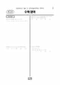

문제지


시험지를 먼저 풀어 보세요. 등급컷·표준점수·난이도는 흐리게 가려 뒀어요.
| 등급 | 원점수 | 표준점수 | 백분위 | 누적 |
|---|---|---|---|---|
| 1 | 81 | 137 | 96 | 4.1% |
| 2 | 70 | 126 | 88 | 11.48% |
| 3 | 59 | 116 | 77 | 23.16% |
| 4 | 47 | 105 | 59 | 41.29% |
| 5 | 35 | 94 | 41 | 60.32% |
| 6 | 22 | 81 | 22 | 78.31% |
| 7 | 15 | 75 | 11 | 90.19% |
| 8 | 10 | 70 | 4 | 96.93% |
등급별 컷 · 입시기관 4곳 원점수 추정 종합(EBSi·메가스터디·종로학원·대성마이맥) · 만점 100점
| 등급 | 표준점수 이상 | 인원(명) | 비율 |
|---|---|---|---|
| 1 | 137 | 14,264 | 4.1% |
| 2 | 126 | 25,660 | 7.38% |
| 3 | 116 | 40,586 | 11.68% |
| 4 | 105 | 63,022 | 18.13% |
| 5 | 94 | 66,137 | 19.03% |
| 6 | 81 | 62,527 | 17.99% |
| 7 | 75 | 41,294 | 11.88% |
| 8 | 70 | 23,437 | 6.74% |
| 9 | 61 | 10,698 | 3.08% |
시·도교육청 공개 자료
출처: 시·도교육청이 공개한 전국연합학력평가 성적 분석·통계자료(공개 자료 보기).
발행 기관: 시·도교육청(전국연합학력평가). 파일 위치: 이 사이트가 보관한 사본. 저작권은 발행 기관에 있습니다. 원본과 다르거나 게시 중단이 필요하면 연락처로 알려 주세요. 등급컷 출처 구분은 데이터 원칙에서 설명합니다.
막대 색은 역대 대비 난이도 · 진한 막대가 이 시험 · 막대를 누르면 그 회차로 이동
| 회차 | 1등급컷 | 표점 최고 | 1등급 표점 | 난이도 |
|---|---|---|---|---|
| 6월 학평2025년 고1이 시험 | 81 | 155 | 137 | 매우 어려움 |
| 3월 학평2025년 고1 | 80 | 156 | 136 | 보통 |
| 10월 학평2024년 고1 | 76 | 162 | 138 | 매우 어려움 |
| 9월 학평2024년 고1 | 88 | 145 | 135 | 쉬움 |
| 6월 학평2024년 고1 | 88 | 143 | 134 | 매우 쉬움 |
| 3월 학평2024년 고1 | 88 | 148 | 138 | 쉬움 |
| 9월 학평2023년 고1 | 80 | 154 | 135 | 어려움 |
| 6월 학평2023년 고1 | 88 | 146 | 136 | 매우 쉬움 |
| 3월 학평2023년 고1 | 88 | 145 | 134 | 매우 쉬움 |
| 11월 학평2022년 고1 | 88 | 147 | 137 | 어려움 |